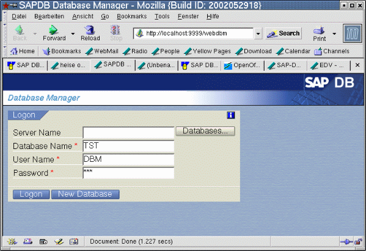
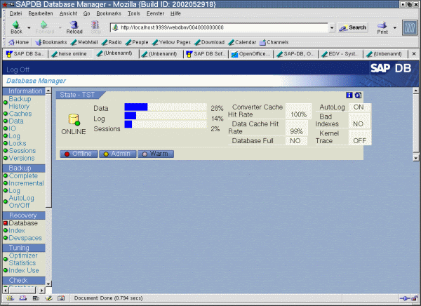
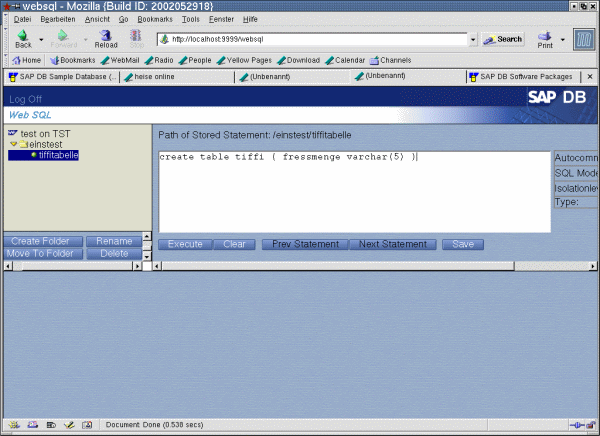
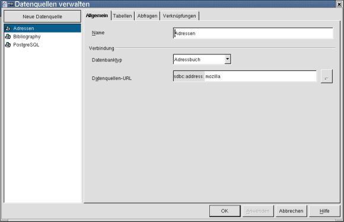
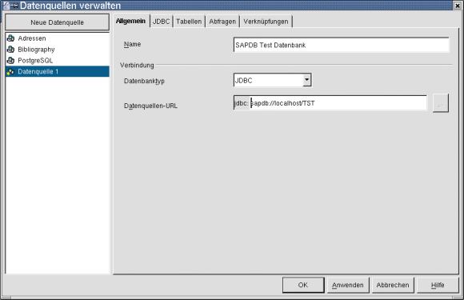
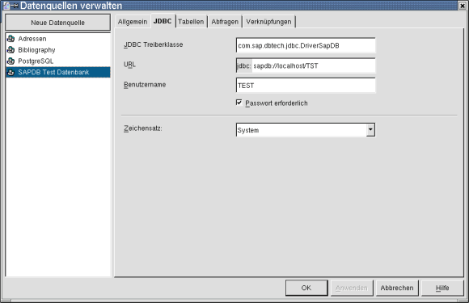
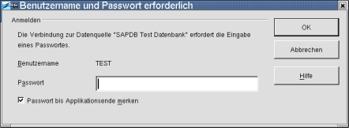

| [zurück] | [Hauptmenü] | [weiter] |
| [PDF] |
SAP DB und OpenOffice.org
Einbinden von SAP-DB in OpenOffice.org mit Hilfe von JDBC
|
|
Die Beschreibung wurde auf Linux (SuSE 8.0) – Kernel 2.4.18, mit JDK – jdk1.3.1_06 und der SAPDB 7.3 realisiert. |
Download der SAPDB
Die Datenbank kann von (1) bezogen werden. Notwendig sind folgende Dateien.
|
Komponente |
Datei |
|---|---|
|
SAP DB Environment |
sapdb-ind-7.3.0.29-1.i386.rpm |
|
SAP DB Server |
sapdb-srv-7.3.0.29-1.i386.rpm |
|
WebInterface und WebSql |
sapdb-web-7.3.0.29-1.i386.rpm |
|
Beispieldatenbank |
sapdb-testdb-7.3.0.29-1.i386.rpm |
Tabelle 1: benötigte Dateien
Installation der SAPDB
Eine sehr detaillierte Beschreibung findet sich unter www.sapdb.org/rpm_linux.htm.
Die Schritte im Einzelnen:
rpm -i sapdb-ind-7.3.0.29-1.i386.rpm
rpm -i sapdb-srv-7.3.0.29-1.i386.rpm
Wenn Sie SAPDB ohne WebInterface und ohne Beispieldatenbank betreiben wollen, sind Sie hier schon fertig. Beachten Sie, dass Sie dann aber die nachfolgenden Schritte nicht mehr nachvollziehen können.
Die Startdateien für die Datenbank liegen im Verzeichnis /opt/sapdb/indep_prog/pgm und sind in folgender Reihenfolge zu starten:
niserver
vserver.
Die Webtools installieren Sie so:
rpm -i sapdb-web-7.3.0.29-1.i386.rpm
Und die Beispieldatenbank so:
rpm -i sapdb-testdb-7.3.0.29-1.i386.rpm
Wollen Sie die Webinterfaces nicht sehen, dann machen Sie weiter bei Punkt 5.
Installation des Webinterface
Wenn Sie das Webinterface der SAPDB sehen wollen, fügen Sie in der Datei /etc/ld.so.conf die Zeile
/opt/sapdb/web/lib
ein.
Dann starten Sie
ld config
Ist ld config abgeschlossen, starten Sie
/opt/sapdb/web/pgm/wahttp
und in einem Browser Ihrer Wahl können Sie mit
über das Webinterface die Datenbank verwalten.

Abbildung
1: Webinterface - Manager Logon
Name der Datenbank ist TST, User Name und Password sind DBM.

Abbildung
2: Webinterface - Database Manager
Nach dem LOGON können Sie die Datenbank verwalten.
Nun empfiehlt es sich die DOKU zu SAPDB zu lesen. ;-)
Starten von WEBsql
Nachzulesen auf www.sapdb.org/sampledb_rpm.htm.
Die notwendigen Infos über Datenbankname und UserName finden sich auch dort.

Abbildung
3: WebSql - Anmeldung
Geben Sie in Ihrem Browser die Adresse http://localhost:9999/websql ein. Name der Datenbank ist TST, User Name und Password sind test.
Abbildung
4: WebSQL
Danach sehen Sie:
Nun empfiehlt es sich SQL-Kenntnisse zu haben.
Bereitstellen des JDBC Treibers
Die Datei sapdbc.jar (kann hier geladen werden www.sapdb.org/sap_db_jdbc.htm) muss in das Verzeichnis usr/java/jdk1.3.1_06/jre/lib/ext kopiert werden.
Der JDBC-Treiber muss für alle lesbar sein, also:
chmod 644 sapdbc.jar
Einstellungen in OpenOffice.org

Abbildung
5: Datenquellen verwalten
Wählen Sie im Menü Extras – Datenquellen.
Legen Sie eine neue Datenquelle an
Name: SAPDB Test Datenbank
Datenbanktyp: jdbc

Abbildung 6: Eine neue SAP DB DatenquelleDatenquelle URL: sapdb://localhost/TST
Und nun den Reiter JDBC klicken und folgende Eintragungen vornehmen:
JDBC-Trieberklasse: com.sap.dbtech.jdbc.DriverSapDB
URL: sapdb://localhost/TST
USER Name: TEST
Passwort erforderlich: ja anwählen

Abbildung
7: EInstellungen für JDBC
Dann den Reiter Tabellen klicken:
Passwort “test” eingeben und

Abbildung 8: Passwortabfrage in OpenOffice.orgOK klicken.
Damit ist die Testdatenbank in OpenOffice.org eingebunden und kann verwendet werden.
Links
Interessante Seiten im weitesten Sinne rund um das Thema:
(1) www.sapdb.org
(2) homepages.fh-giessen.de/~hg7494/usefull/laps_german.html
(3) www.kienlein.com/pages/mysql-jdbc-howto-de.html
Credits
Autoren:
Daniel Mischler (mischler@openoffice.org)
Manfred Reiter (manfredr@openoffice.org)
Korrektur gelesen:
letzte Änderung: 25.05.2003
Kontakt : OpenOffice.org Documentation Project documentation.openoffice.org
OpenOffice.org deutschsprachig de.openoffice.org